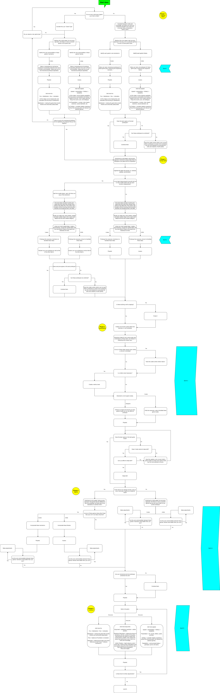
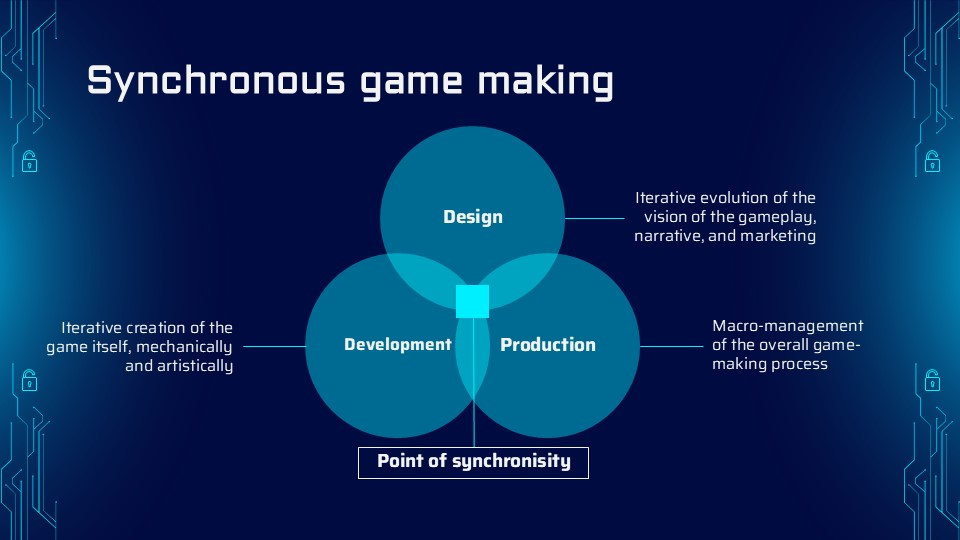
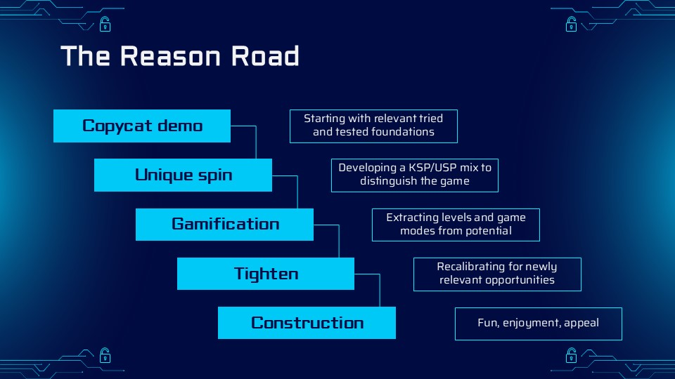

Pre-development group ideation meetings. My new peeve. Assembling a team of people to sit in a zoom call and conjure a unique game idea that the entire collective history of game designer concentration has itself failed to conjure is frankly less likely to produce your company's magnum opus than having it descend upon you while singing your favourite Taylor Swift single in the shower. The "think then build" approach leads only to blank page syndrome and uninspired pseudo-art. But surely the opposite, to build and then think is no better. There is hope, however, provided by none other than Hidemaro Fujibayashi in this video as he recalls the design process that led him to create the masterpiece that is The Legend of Zelda: Breath of the Wild.
By taking a cleverly selected combination of tried and tested, proven mechanics from existing games, there are various ways to find and create unique combinations of these elements to make a wonderful game that feels like no other. In an effort to turn this process into a science with a repeatable, rigid-enough-to-guarantee-progress-when-you-need-it guideline, I undertook some excruciatingly thorough research to develop my own formula that I call the 'Reason Road'. In pursuit of this holy elixir I have drawn from as far back as Nolan Bushnell all the way up to the cutting edge design approaches of hyper-talented modern indie developers, as well as the wealth of knowledge from my university lecturers, my former boss and Rockstar Director, TEDx talks, GDC talks, the esteemed Don Norman, Richard Lemarchand, Raph Koster, Elizabeth Gilbert, design thinking, self-determination theory, the Octalysis framework, the MDA framework, and many other sources.


So without further ado, here it is, that white flowchart to your left is the Reason Road in all its glory. This blue image is a visual representation of the more macro aim of this approach to game creation, which is to advance design, development, and production simultaneously.
Creating a game can be likened to building a boat in the middle of the sea. You need a sailor, an engineer, and a navigator all at once.

And this blue image summarises the five stages of the Reason Road. In particular, I want to focus on the fifth stage, which is something like adding polish but in a more glorified manner. Ultimately, the goal is to max out the fun, enjoyment, and appeal of the game.
• Fun refers the satisfaction that a game provides. A fun game is one that plays well. That doesn't reject your intuitive responses. That keeps you in a state of flow. That motivates you to move forward.
• Enjoyment refers to something a bit more profound. The content. The substance. The je ne sais quoi.
• Appeal refers to the that which plays with your desire for the game. The sexy packaging. The juice. The grokability. The teasing fantasy of a craveable roleplay experience with no barriers to entry. The thing that makes people think "Nah... that looks too good to be true." only to reluctantly glance back from the corner of their eye as they walk away.
And how can a game achieve all this? Among a million other things, it needs a great core game loop, it needs a great progression home, it needs a desirable means of continual updates, it needs an appropriate susceptibility to the player's demands, it needs an effective inbuilt teaching system, it needs a source for sympathy, it needs to promote cognitive mapping, it needs to facilitate perfection resolution, and it needs to create artistic paradox. To me, game design is not just about ideating and tweaking. But rather it is about creating beautiful and important art through a balance of exploration, interaction, story, and play.
Level Design
I employ a player-first approach that crafts worlds with natural rhythm - spaces that breathe between tension and release, punctuated by meaningful surprises and clear gameplay incentives. My background as a writer informs how I stage memorable moments, transforming functional layouts into compelling environmental narratives and fair and intuitive spatial dynamics. Below are three examples of my work covering three different kinds of games.
My core guiding principle is that every inch of a level should exist for two purposes:
One micro, self-evident reason for being there
And one macro, how it serves the greater context
I prioritise subconscious learning and intuitive wayfinding through subtle visual language, balanced with organic opportunities for player expression. Rooted in cognitive psychology, my designs suspect players in a state of flow and create the illusion of unscripted freedom while maintaining deliberate pacing.
My strength lies in maximalism through minimalism. I pride myself on my ability to pack style into a husk and depth into a puddle, crafting richness from simplicity and transforming clunky spaces into fluid gameplay canvases.
This player-centric approach ensures every moment feels earned yet unexpected. Whether crafting tight multiplayer maps or expansive story worlds, I build levels that resonate beyond their runtime - where players recall not just what they did, but how it made them feel.